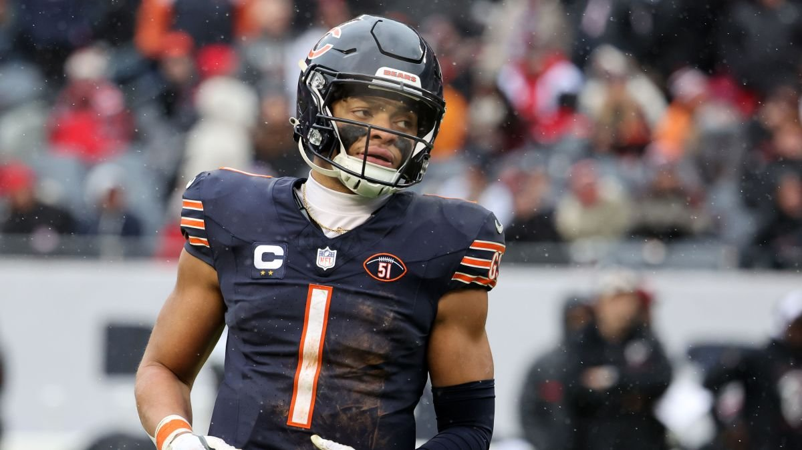

About Me!
My name is Sameer Kajani.
I am a Junior at IIT majoring in Computer Science & Minoring in Economics.
When not in school:
Work as Information Technology Analyst Intern @ CannonDesign

CannonDesign is an Architecture Firm that utilizes engineering, construction, strategy, innovation, and more to make a big impact on the society around them.
Watch Sports: Basketball & Football
Chicago Bulls!
My favorite basketball team to watch is the Chicago Bulls! Hopefully, they will make a deep run in the playoffs this year.
I think you will be able to guess my favorite football team!
Chicago Bears!
My favorite football team to watch is the Chicago Bears! They have a big decision to make in the next few months, keep Justin Fields (image above) or draft Caleb Williams as their new Quarterback.